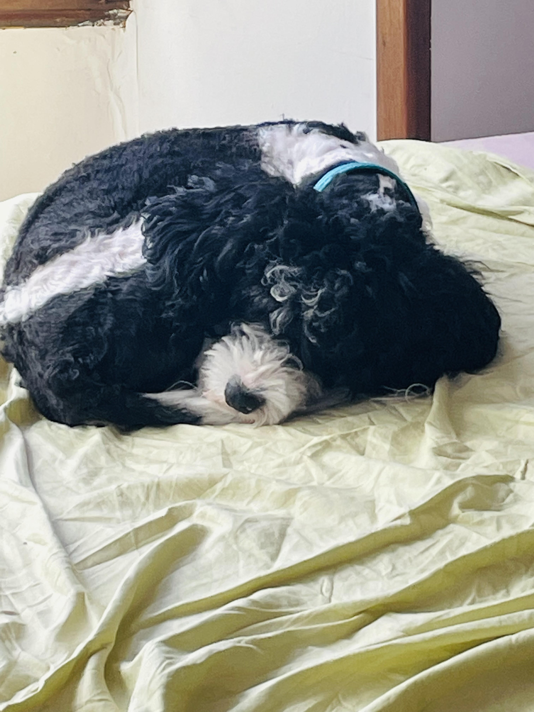
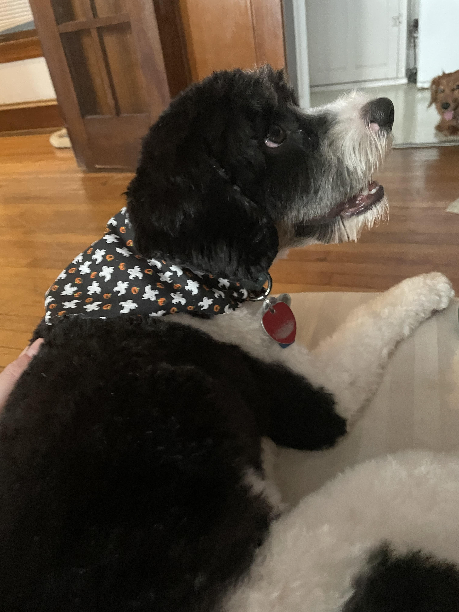
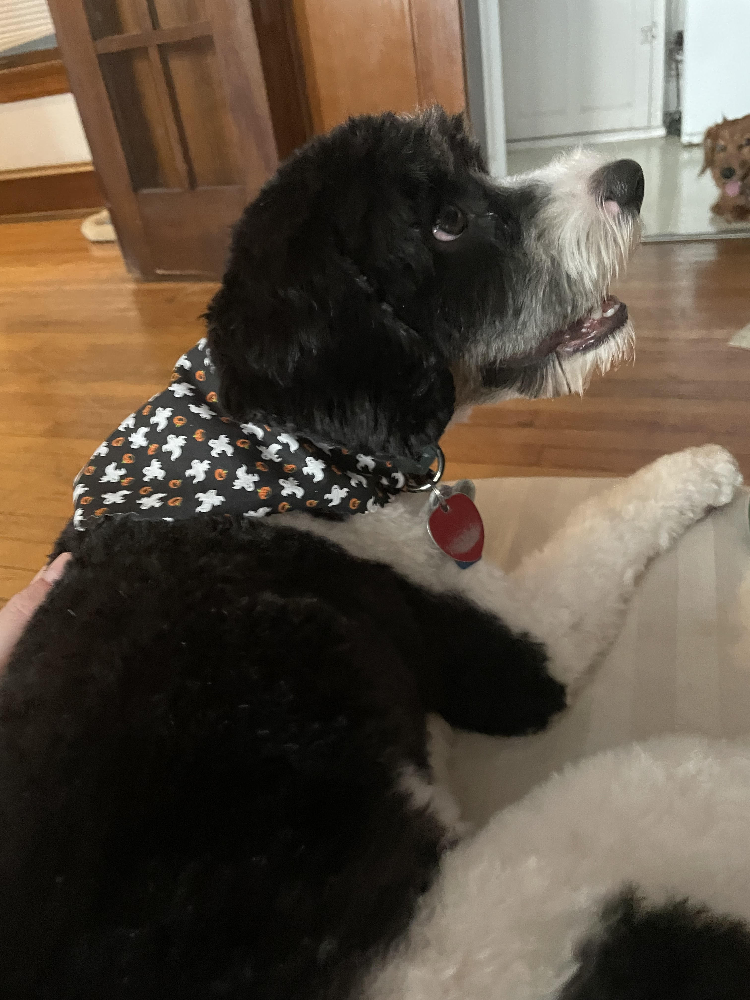

How Hayley passes the time:
-
Photography: Capturing moments through
landscapes, portraits, and creative compositions.
-
Gardening: Growing flowers, vegetables, and herbs
to create a personal green oasis.
-
Cooking: Experimenting with new recipes,
cuisines, and techniques in the kitchen.
-
Hiking: Exploring nature trails and enjoying
outdoor adventures in various terrains.
-
Reading: Diving into novels, non-fiction, or
poetry to expand knowledge and imagination.
-
Painting: Expressing creativity through
watercolor, acrylics, or oil on canvas.
-
Gaming: Immersing in video games, board games, or
role-playing adventures for fun and strategy.
Some of her (adorable) dog friends...

Dog playing with a ball
 Dog chewing on a bone
Dog chewing on a bone
 Long-haired dog relaxing
Adorable baby dog
Two brother dogs posing together

Handsome Dog
Long-haired dog relaxing
Adorable baby dog
Two brother dogs posing together

Handsome Dog